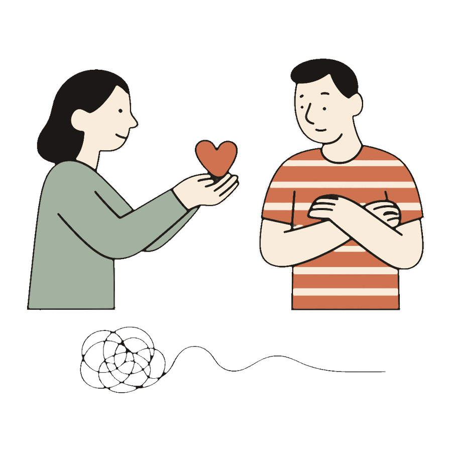

Как извиниться так, чтобы это сработало

- «Ну извини» делает хуже: человек слышит «отстань со своей обидой».
- Работающее извинение состоит из конкретики, признания чувств, отсутствия «но» и одного изменения.
- Если извинение ничего вам не стоило, оно, скорее всего, не сработает.
«Ну извини». Два слова, после которых обычно становится хуже, чем было. Потому что оба слышат в них одно и то же: «отстань уже со своей обидой». Формально извинение произнесено, фактически человеку сообщили, что его чувства надоели.
Настоящее извинение устроено сложнее, чем «прости». Но и не так сложно, чтобы этому нельзя было научиться за один вечер.
Почему «извини» не работает само по себе
Обиженному человеку нужно не слово. Ему нужно знать три вещи: что вы поняли, что именно сделали. Что вам не всё равно, каково ему было. И что есть шанс не наступить туда же завтра. Голое «извини» не отвечает ни на один из трёх вопросов, поэтому и отскакивает.
Из чего состоит извинение, после которого мирятся
1. Конкретика вместо «если что»
Сравните: «извини, если я тебя чем-то обидел» и «я вчера при твоих друзьях пошутил про твою работу, это было обидно». Первое перекладывает работу на обиженного: сам догадайся, за что я извиняюсь, и докажи, что было за что. Второе показывает: я понял, что сделал. Слово «если» убивает извинение на старте.
2. Признание чувств второго
Одна фраза, которая делает половину работы: «представляю, как тебе было неприятно». Вы не обязаны считать реакцию партнёра единственно правильной. Вы признаёте, что она настоящая. Обиде, которую увидели, больше не нужно кричать.
3. Без «но»
«Прости, но ты сама начала» это не извинение, а контратака в упаковке. Любое «но» стирает всё, что стояло перед ним. Если у вас есть своя обида, у неё будет свой разговор. В извинении ей не место.
4. Одно конкретное изменение
«Я постараюсь так больше не делать» звучит как прогноз погоды. Работает конкретика: «в следующий раз, если буду задерживаться, напишу сразу, а не за полночь». Маленькое обещание, которое реально выполнить, стоит больше клятв.
Проверка простая: настоящее извинение стоит чего-то. Признать конкретный поступок неприятно, менять привычку затратно. Если извинение не стоило вам ничего, скорее всего, оно и не работает.
«Я вчера при твоих друзьях пошутил про твою работу. Представляю, как было неприятно. В следующий раз промолчу, а если очень захочется, скажу тебе наедине».
Сложно подобрать слова?
У Медиатора есть переводчик фраз: напишите как чувствуете, хоть со злостью, а он предложит спокойные варианты, в которых суть сохранена. И поможет разобрать саму ссору, чтобы извинение попало в настоящую обиду, а не в повод. Первый разбор бесплатный.
Подобрать словаЕсли извиняться нужно вам обоим
В большинстве ссор виноватых двое, просто по-разному. Тогда лучшее извинение парное: каждый признаёт свою часть, без торга «а ты больше». Начинает обычно тот, кто первым остыл, и это не проигрыш, а взрослость. Подробнее о том, как выстроить весь разговор после конфликта, в нашем разборе как помириться после сильной ссоры.
Частые вопросы
Извинилась, а он всё равно дуется. Что не так?
Возможно, извинение попало не в ту обиду: вы извинились за слова, а задело его что-то другое. Спросите прямо: «я хочу понять, что именно тебя ранило». А иногда обиде просто нужно время, извинение работает не мгновенно.
Надо ли извиняться, если я права по сути?
За позицию не надо. А вот за форму бывает нужно: правоту можно донести и криком, и спокойно, и крик остаётся криком даже у правого. «Я всё ещё считаю, что нам нужно экономить, но за тон вчера прости» отлично сочетается.